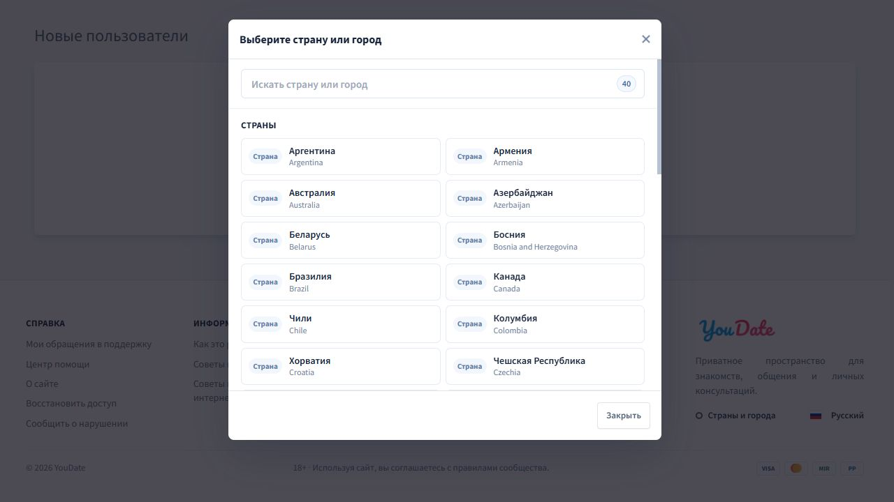
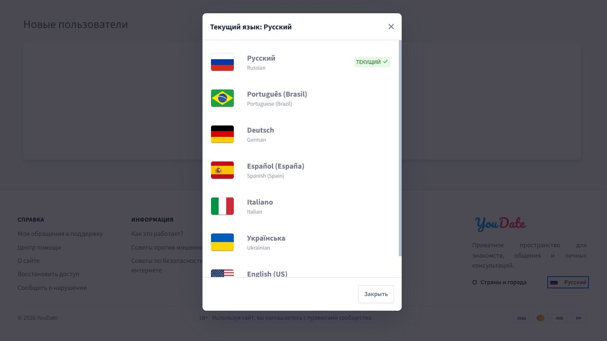

Фокус и закрытие двух окон внизу главной страницы
Когда окно открыто, клавиатура должна управлять им. Сейчас в «Странах и городах» фокус уходит из окна, а выбор языка не закрывается по Esc. Исправьте это в существующих окнах и свяжите заголовок окна языка с его именем для скринридера.
Открыть интерактивный макет нижней части главной · Открыть главную Confideline · Открыть карточку Trello
1. «Страны и города»
Как есть сейчас
Внизу главной откройте «Страны и города». Нажимайте Tab, пока фокус не окажется на нижней кнопке «Закрыть», затем нажмите Tab ещё раз. Окно остаётся открытым, а фокус выходит из него. Браузер показывает активным элементом фон страницы.

Как должно быть
При открытии фокус на поиске. С нижней кнопки Tab переводит фокус на крестик, Shift + Tab с крестика возвращает его на нижнюю кнопку. Esc закрывает окно и возвращает фокус на «Страны и города».
Повторить шаги в макете · Посмотреть фокус после Tab в макете

2. Выбор языка
Как есть сейчас
Внизу главной откройте «Русский» и нажмите Esc. Окно остаётся открытым, фокус остаётся на ссылке «Русский» за окном. Заголовок «Текущий язык: Русский» виден, но не связан с именем окна.

Как должно быть
При открытии фокус сразу переходит на крестик. Tab и Shift + Tab перебирают элементы внутри окна. Первое нажатие Esc закрывает его и возвращает фокус на «Русский». В дереве доступности окно имеет имя «Текущий язык: Русский» из видимого заголовка.
Повторить шаги в макете · Посмотреть фокус при открытии · Посмотреть возврат фокуса после Esc